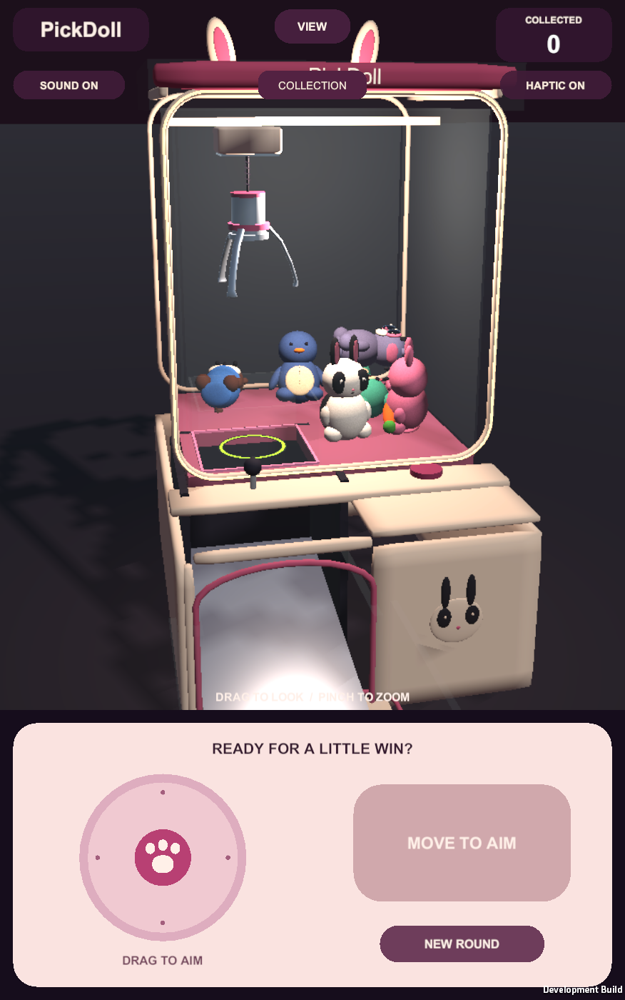
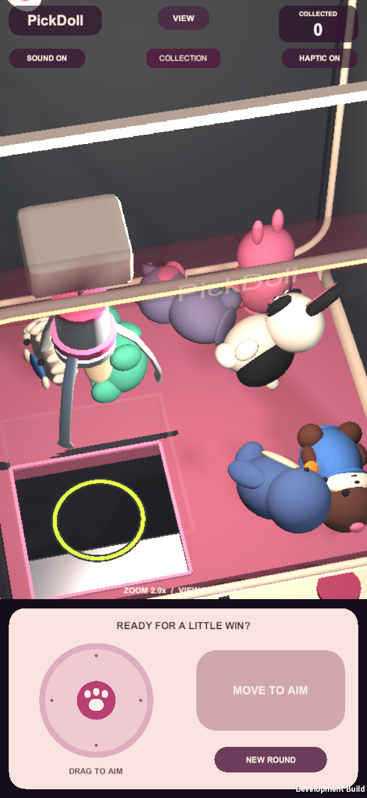
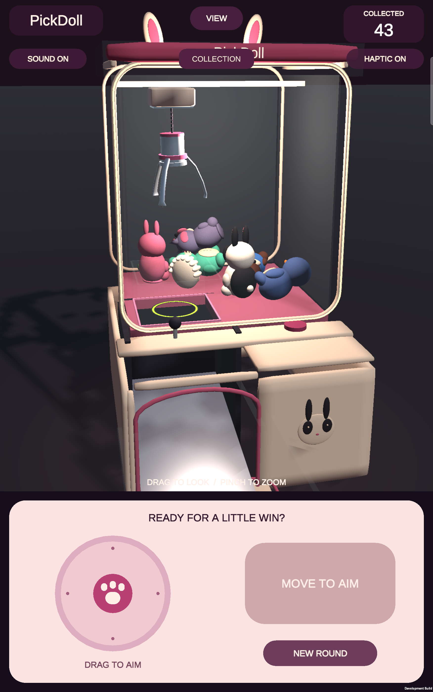

12주차 · 토끼 장난감집
인형과 집게가 주인공이 되는 외형으로.
0.12.0 / Android code 16 · 구현·자동 검사·탭 설치 완료, 사용자 품평 대기
선택한 방향
사용자가 선택한 1번 시안을 기준으로 크림·핑크와 작은 토끼 귀, 둥글고 얇은 프레임을 적용한다. 시안보다 간판과 조작 선반을 줄여 인형이 더 잘 보이도록 한다.

위 이미지는 디자인 참고 시안이며 실제 게임 캡처와 구분한다.
변경 사항
- 직각 기둥 대신 큰 모서리 반경의 둥근 창틀과 연속된 따뜻한 LED 라인.
- 창을 가리던 앞 간판을 위로 이동하고 높은 시점에서는 반투명하게 표시.
- 조작 선반 깊이 .29m → .16m, 높이 .07m → .035m. 제어봉·버튼도 크기와 위치 조정.
- 두꺼운 수령함 장식을 얇은 테두리로 바꾸고 작은 흑백 토끼 배지 추가.
- 크림색 외장·차분한 장밋빛 바닥·짙은 배경, 1배/2배 카메라 구도 조정.
새 프레임·장식은 렌더링 전용이다. 집게·인형·유리벽·전시 바닥·배출 경사로·수령 바닥의 기존 충돌 구조를 보존하고 생성 시 비교한다.
실제 Windows 실행 화면


검증 현황
씬 생성·보호 대상 충돌 구조 비교 통과. 7종 × 서기/눕기 14조건 경사로 통과, 신규 인형 3종 × 2자세 안정성 6조건 통과. Windows 빌드와 실행 통합 회귀 통과: 7종 서기/눕기 집기 14조건, 두 인형 배출의 고유 획득 기록, 도감·10초 콤보·저장 복원·7개 배출 후 자동 보충·음소거. 최종 시험 저장 27개. 876×1400 UI·591×1280 세 시점 확대 구도 통과. Android ARM64 APK 빌드·v2 서명·API 26/36 확인 통과. 갤럭시 탭 SM-X820에 0.12.0(code 16) 설치·실행 확인. 설치 전후 수집 기록 JSON이 완전히 일치하며 43개 기록·획득 ID·종류가 모두 보존됐다. 폴드 펼침 비율 906×1088 UI·도감 검사도 통과했다.
갤럭시 탭 설치 확인

실기기 외형·기본 화면 확인. 조작감과 외형에 대한 사용자 품평은 대기 중이다.
SHA256 940151bfa8db63a443ad85c04daee471607d38fff670e016eb678a07c132504f
운영과 후속 작업
기본 시점에서 COLLECTION 버튼과 간판 글씨 일부가 겹치는 점을 관찰했다. 인형 전시 공간을 가리지는 않으며 후속 품평에서 HUD·간판 간격을 검토한다.
이번 차수의 튜닝은 에디터 미리보기로 모아 확인하고, Windows·Android 플레이어 빌드는 마감 때 진행한다. Play Games 로그인·업적·클라우드 복원은 후속 차수에서 진행한다.